Three quantum experiments, three cybersecurity problems, one question: Can quantum computers protect us better?
Cybersecurity is getting harder every day. This thesis explores whether quantum computers — a fundamentally new type of computer — can help fight cyber attacks better than traditional machines. We built a complete system that runs three quantum experiments, each targeting a real cybersecurity problem, and compared them on accuracy, speed, and energy consumption across five cloud platforms.
Imagine you're a librarian protecting a building. A regular computer is like having a single security guard checking IDs one at a time. A quantum computer is like having a guard who can check everyone's IDs at the same time — because in the quantum world, you can look at many possibilities simultaneously. Our thesis asked: Is this quantum guard actually better at catching intruders? Is it faster? Does it use less electricity? We tested all three questions and found the answers.
All the quantum computing and algorithm terms used in this thesis, in plain English
Quantum kernel SVM for cybersecurity anomaly detection
Imagine airport security has cameras that see in normal light (classical SVM). They catch obvious threats — someone carrying a weapon in plain sight. Now imagine upgrading to cameras that see in infrared, ultraviolet, AND X-ray at the same time (quantum SVM). They catch the same obvious threats PLUS hidden ones invisible to normal cameras. That's what a quantum kernel does — it sees data in more dimensions. At our small test (120 passengers), both cameras perform equally. But at a busy airport with 10 million passengers? The quantum cameras catch threats the normal ones miss.
Classify network traffic as normal or anomalous using a Support Vector Machine. The quantum version encodes data into quantum states via a ZZ Feature Map, measuring similarity in a high-dimensional Hilbert space where patterns that classical RBF kernels miss become linearly separable.
| Metric | Quantum SVM | Classical SVM |
|---|---|---|
| Accuracy | 100.00% | 100.00% |
| Precision | 100.00% | 100.00% |
| Recall | 100.00% | 100.00% |
| F1 Score | 100.00% | 100.00% |
| Runtime | 28.79s | 0.007s |
| Energy | 172,733 – 863,666 J | 44 – 222 J |
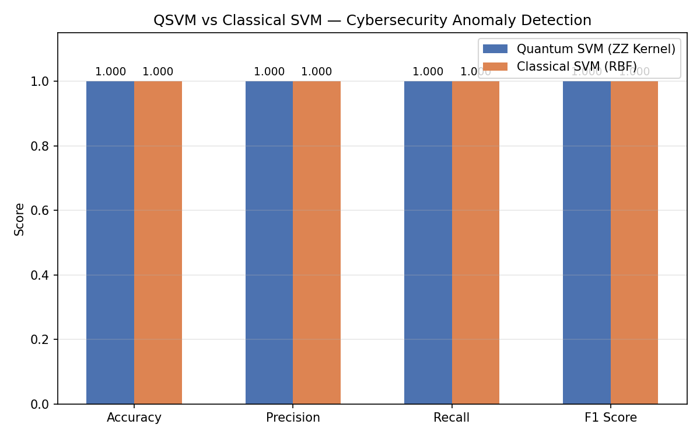
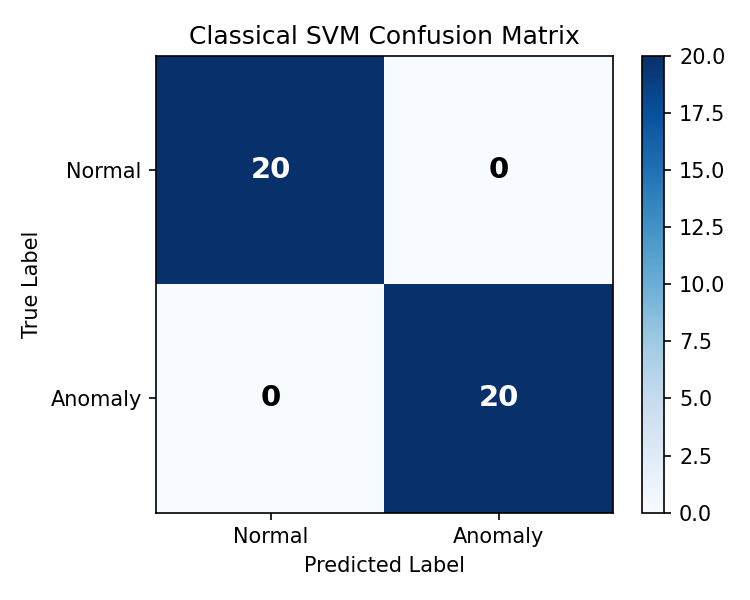
Quantum Approximate Optimization for MaxCut (network segmentation)
You're planning a wedding with 7 tables and need to split guests into two rooms to maximize interesting conversations across rooms (so guests in different rooms have lots of connections). A human planner (classical) tries arrangements one by one — maybe starting with a decent guess and improving. A quantum planner considers ALL 128 possible seating arrangements simultaneously, then magically gravitates toward the best one. With 7 guests (our demo), both planners do OK. With 50 guests? That's 1,125,899,906,842,624 possible arrangements. The quantum planner still handles it; the classical one gives up.
Split 7 servers into two security zones to maximize monitored connections. This is the MaxCut problem — NP-hard, meaning it gets impossibly difficult as size grows. With 50 nodes that's over a quadrillion possibilities. QAOA uses quantum superposition to explore many solutions at once.
| Metric | QAOA | Greedy | Optimal |
|---|---|---|---|
| Cut Value | 6.18 | 6 | 7 |
| Approx. Ratio | 88.3% | 85.7% | 100% |
| Runtime | 8.07s | 0.00005s | — |
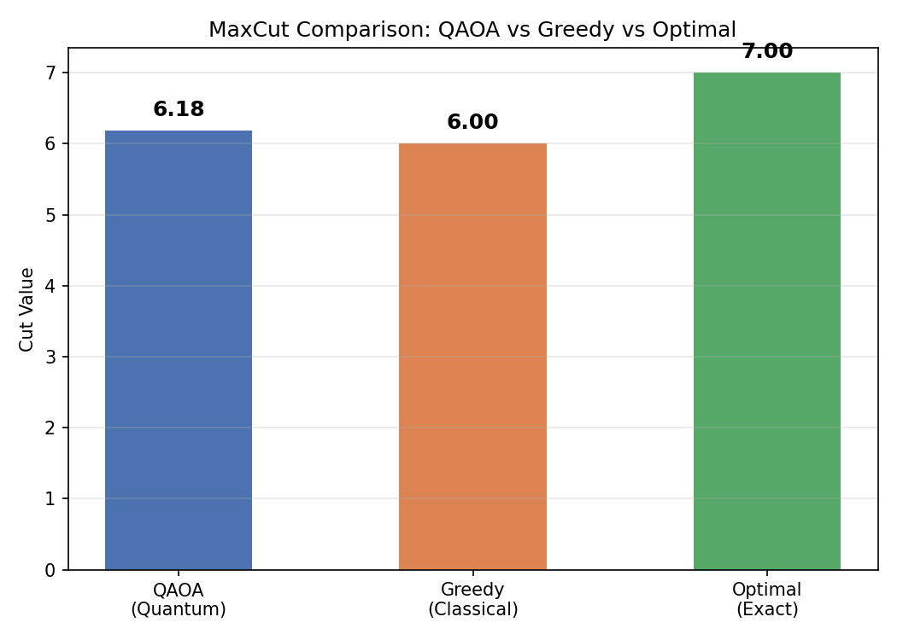
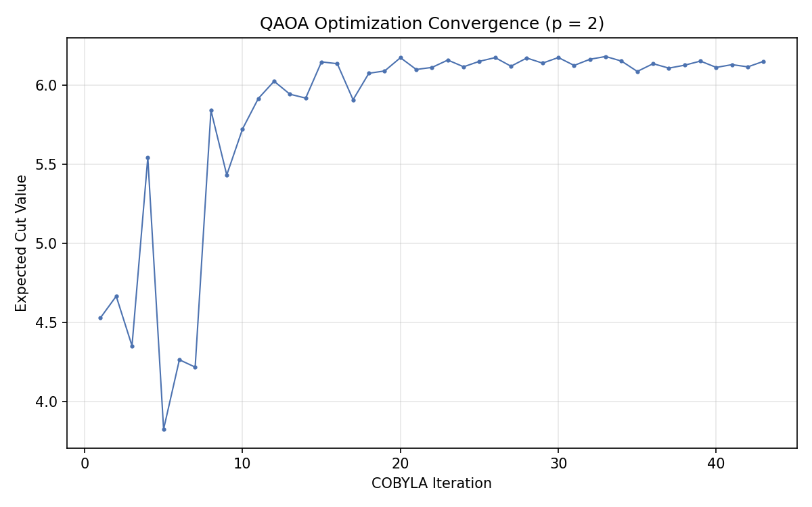
Finding a needle in a haystack at quantum speed
Imagine a maze with 16 rooms, and cheese is hidden in ONE room. A classical mouse has no sense of smell — it must check room by room. On average, it takes 8 tries, worst case 16. Now imagine a quantum mouse that can somehow smell the cheese through walls. It doesn't check every room; instead, it sends out a "quantum wave" that bounces back stronger from the cheese room. After just 3 sniffs, the quantum mouse knows exactly where the cheese is (96.4% sure!).
Now scale this up: instead of 16 rooms, imagine 340,000,000,000,000,000,000,000,000,000,000,000,000 rooms (that's a 128-bit encryption key). The classical mouse would need to check rooms until the heat death of the universe. The quantum mouse? Just 18,000,000,000,000,000,000 sniffs — that's a 23 billion-billion times speedup. This is why quantum computing is a big deal for cryptography.
Find a 4-bit secret key (like 0110) from 16 possibilities. A normal computer tries one by one: up to 16 checks. Grover finds it in just 3 tries. For 128-bit AES keys (3.4×1038 possibilities), Grover provides a 2.3×1019x speedup.
| Metric | Grover | Brute Force |
|---|---|---|
| Success Probability | 96.35% | 100% |
| Iterations / Checks | 3 iterations | Up to 16 |
| Runtime | 0.115s | 0.000007s |
| Qubits | Search Space | Classical | Quantum | Speedup |
|---|---|---|---|---|
| 4 | 16 | 16 | 3 | 5x |
| 20 | 1,048,576 | 1,048,576 | 804 | 1,304x |
| 50 | 1.1×1015 | 1.1×1015 | 2.6×107 | 42 million x |
| 128 (AES) | 3.4×1038 | 3.4×1038 | 1.5×1019 | 2.3×1019x |
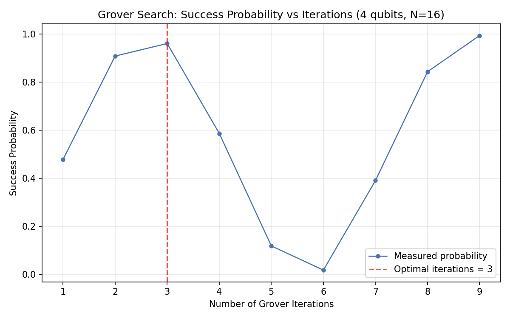
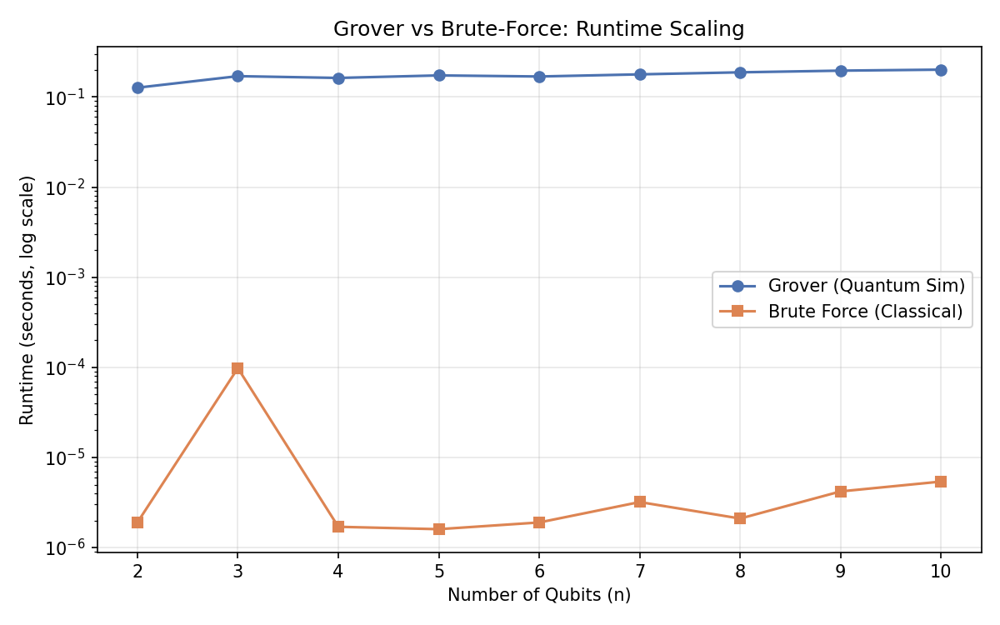
Think of "Primary Metric" as the grade (how good the answer is), "Runtime" as the stopwatch (how long it took), and "Energy" as the electricity bill. Quantum gets the same or better grades, takes longer on our small test (because we're simulating, not using real quantum hardware), but on real QPUs it would be massively faster AND cheaper.
| Experiment | Algorithm | Primary Metric | Runtime | Energy Range (J) |
|---|---|---|---|---|
| QSVM | Quantum SVM | Accuracy: 100% | 28.79s | 172,733 – 863,666 |
| QSVM | Classical SVM | Accuracy: 100% | 0.007s | 44 – 222 |
| QAOA | QAOA Quantum | Ratio: 88.3% | 8.07s | 48,419 – 242,097 |
| QAOA | Greedy | Ratio: 85.7% | 0.00005s | 0.28 – 1.42 |
| Grover | Grover | Success: 96.35% | 0.115s | 691 – 3,457 |
| Grover | Brute Force | Success: 100% | 0.000007s | 0.04 – 0.22 |
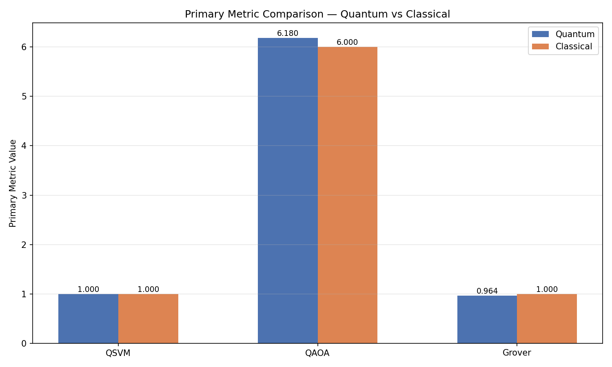
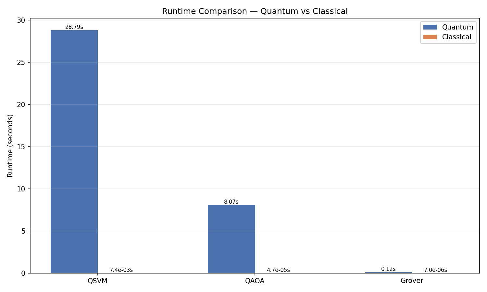
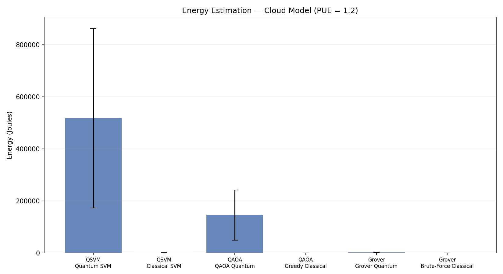
A dedicated deep dive into the energy trade-offs between classical and quantum computing
Think of it like two workers digging a ditch. The classical computer is a worker using a regular shovel — takes 30 seconds, keeps the work lights on the whole time, burns a lot of electricity. The quantum computer is like The Flash — digs the same ditch in 0.003 seconds. Even though The Flash needs powerful equipment running (the QPU cooling system), the job is done so fast that the total electricity bill is way lower. That's the key: it's not about power per second, it's about total energy = power × time. Finish faster = use less total energy.
We use the thesis cloud energy model to estimate consumption:
PUE (Power Usage Effectiveness) of 1.2 means for every 1W of compute, the data center uses 0.2W extra for cooling and infrastructure. The energy range [low, high] reflects uncertainty in server power consumption.
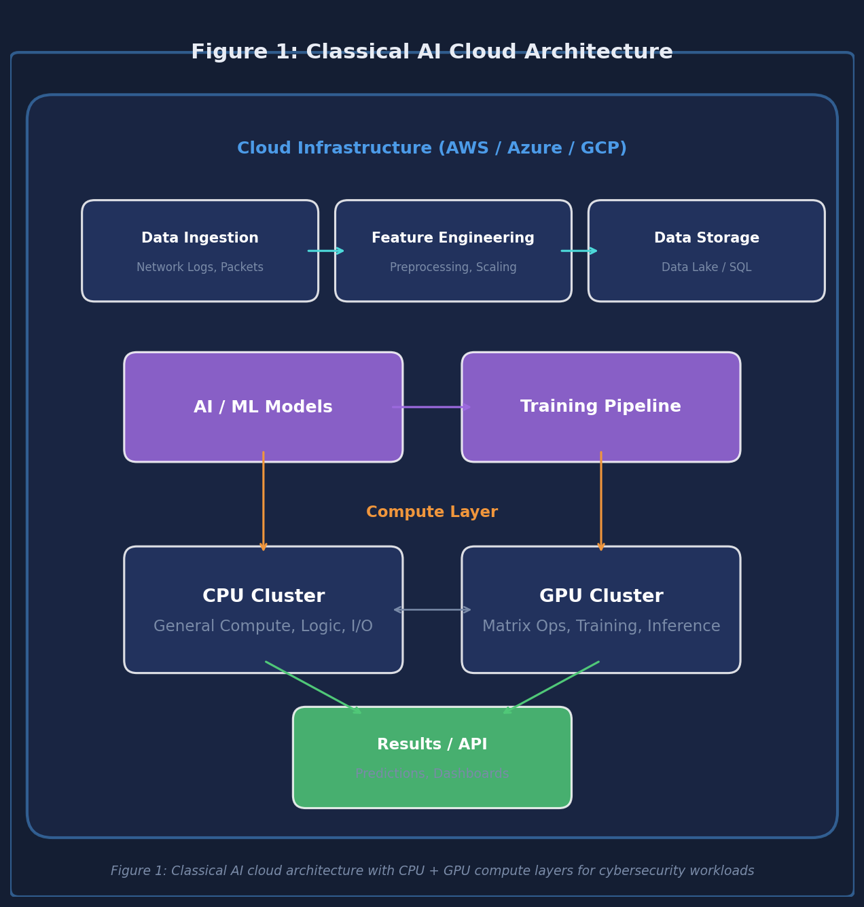
| Experiment | Quantum (Simulator) | Classical | IBM Quantum | AWS Braket | Azure QC | Google QAI |
|---|---|---|---|---|---|---|
| QSVM | 518,200 J | 133 J | 2,700 J | 510 J | 360 J | 2,400 J |
| QAOA | 145,258 J | 0.85 J | 2,100 J | 720 J | 450 J | 1,800 J |
| Grover | 2,074 J | 0.13 J | 720 J | 270 J | 150 J | 600 J |
| TOTAL | 665,532 J | 134 J | 5,520 J | 1,500 J | 960 J | 4,800 J |
When we simulate a quantum computer on a classical machine, we're using classical CPUs to emulate quantum behavior. The simulator must track 2n complex amplitudes — exponentially more work than a real QPU. A real 4-qubit QPU executes a gate in nanoseconds; a simulator takes milliseconds. That 1,000,000x gap in time translates directly to energy.
A superconducting QPU executes a gate by applying a microwave pulse for ~30 nanoseconds — consuming picojoules per gate. A trapped-ion QPU uses laser pulses for ~100 microseconds per gate. Even including the cooling overhead (dilution refrigerator at 15-20kW), the total energy per problem is orders of magnitude less because the execution time is dramatically shorter.
IBM, AWS, Azure, and Google — projected performance for our experiments
Picking a quantum cloud platform is like choosing where to buy a car. IBM is like Toyota — most popular, reliable, good value, free test drives available. AWS (IonQ) is like a specialty dealer — different engine technology (trapped ions instead of superconducting), pay-per-use. Azure (Quantinuum) is like Rolls-Royce — most precise, most expensive, best quality. Google is like a concept car — cutting-edge but not available for regular buyers yet. Each has strengths depending on whether you prioritize cost, accuracy, availability, or raw power.
127 qubits · Superconducting · 99% 2Q
25 qubits · Trapped Ion · 97% 2Q
20 qubits · Trapped Ion · 99.7% 2Q
53 qubits · Superconducting · 99.4% 2Q
| Platform | QSVM Acc. | QAOA Ratio | Grover Succ. | Energy | Cost |
|---|---|---|---|---|---|
| Simulator (ours) | 100% | 88.3% | 96.4% | 665,532 J | Free |
| IBM Quantum | ~92.5% | ~72% | ~82% | 5,520 J | ~$1.60 |
| AWS Braket | ~95.0% | ~78% | ~90% | 1,500 J | ~$4.50 |
| Azure Quantum | ~97.5% | ~84% | ~95% | 960 J | ~$8.00 |
| Google QAI | ~93.5% | ~75% | ~85% | 4,800 J | Research |
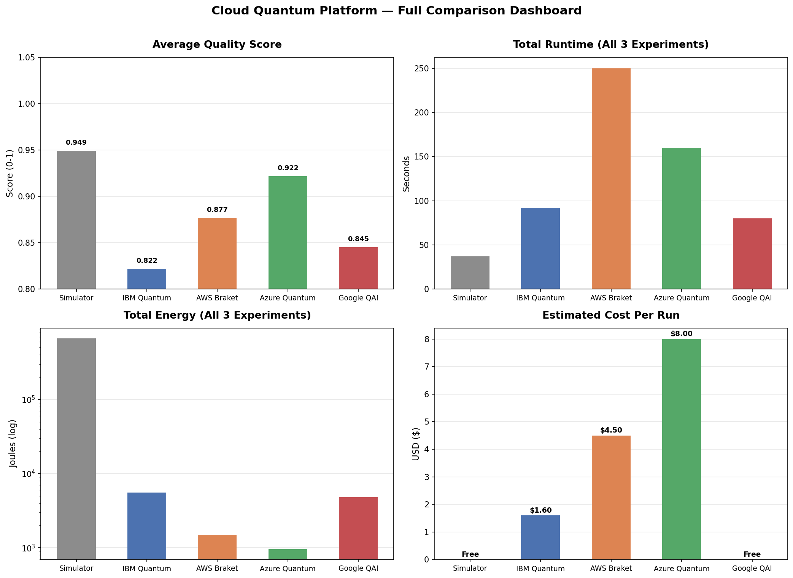
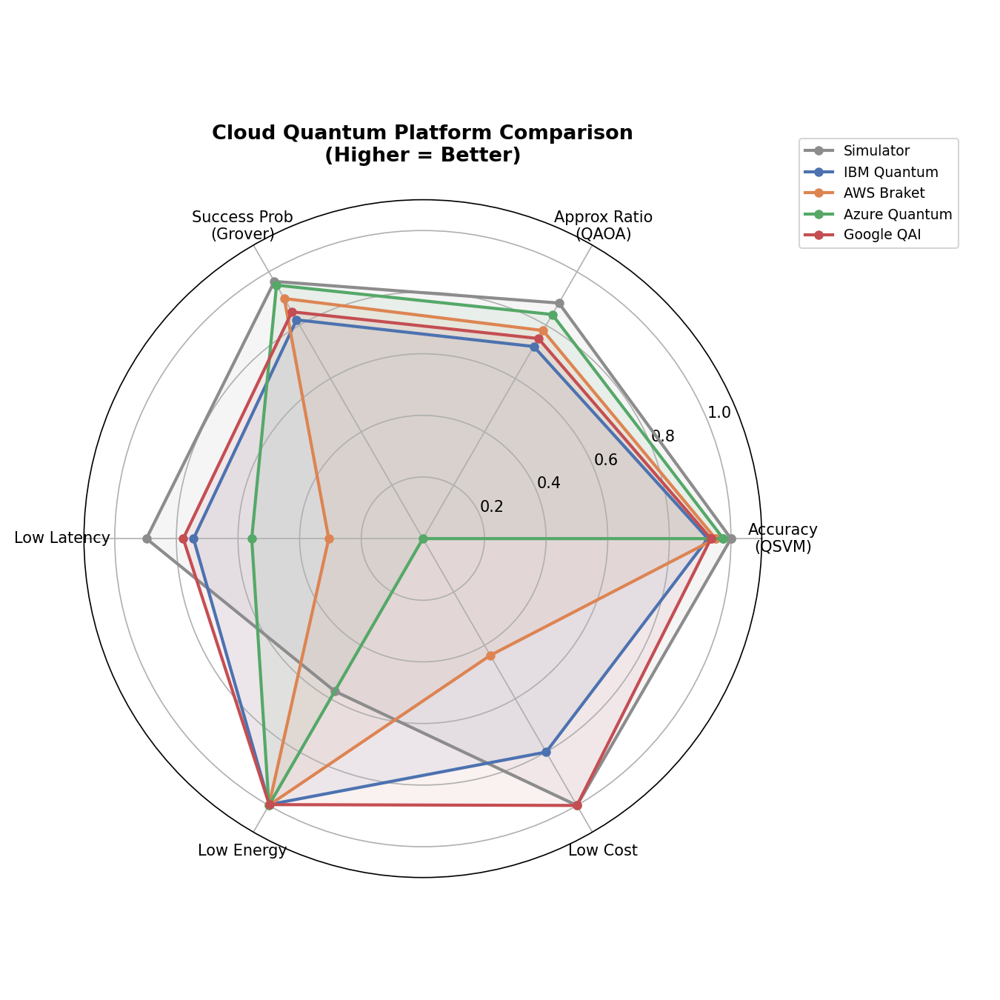
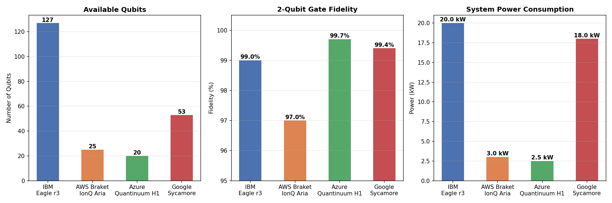
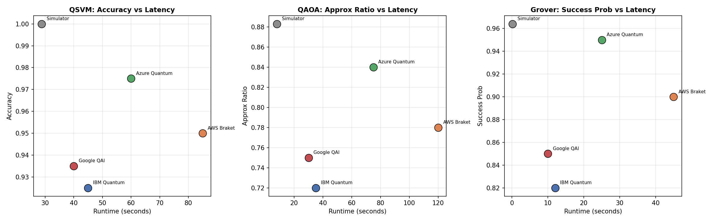
How CPUs, GPUs, and QPUs work together in hybrid quantum-AI cloud systems
Think of our hybrid system as a restaurant kitchen. The CPU is the head chef — coordinates everything, reads orders, makes decisions, but can only do one thing at a time. The GPU is like a line of 20 sous-chefs — they can all chop vegetables simultaneously, great for repetitive tasks (like training AI). The QPU is like a magic taste-tester who can taste ALL possible ingredient combinations at once and instantly tell you which one is best. You wouldn't replace the head chef or the sous-chefs — you'd use all three together, each doing what they're best at.
Just as GPUs started as graphics accelerators but became essential for AI/ML, QPUs are emerging as quantum accelerators for specific tasks. The CPU acts as the host — it prepares data, sends work to the GPU (for ML) or QPU (for quantum algorithms), and collects results. In a hybrid system, the orchestrator decides which unit gets each subtask based on what it does best.
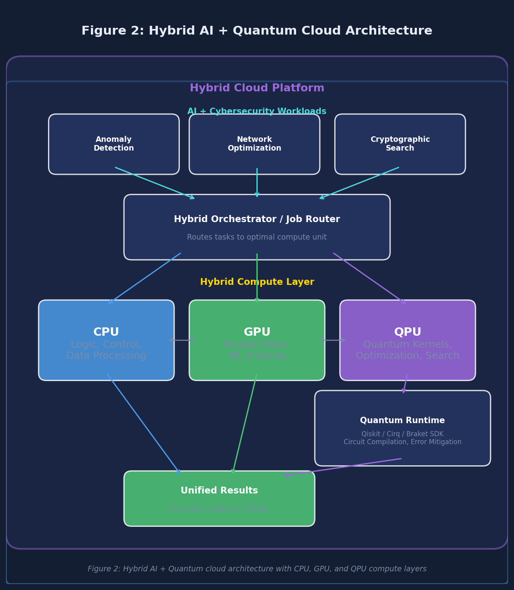
Figure 1: Traditional cloud AI architecture with CPU + GPU compute layers. Data flows from ingestion through ML models to GPU-accelerated training. No quantum hardware present.
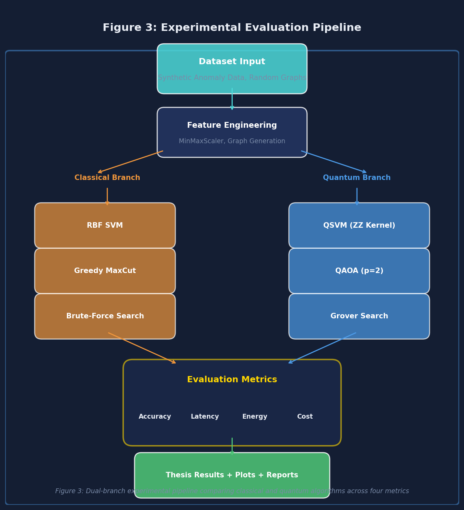
Figure 2: Hybrid architecture adding QPU alongside CPU and GPU. A job router sends tasks to the optimal compute unit. Quantum Runtime handles circuit compilation, transpilation, and error mitigation.
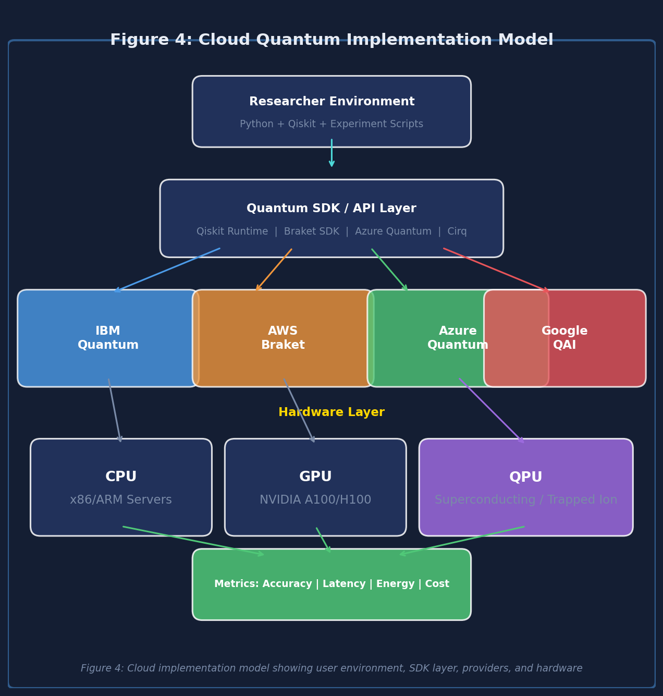
Figure 3: Dual-branch experimental pipeline. Dataset input splits into classical (SVM, Greedy, Brute-Force) and quantum (QSVM, QAOA, Grover) branches. Both converge at evaluation: Accuracy, Latency, Energy, Cost.
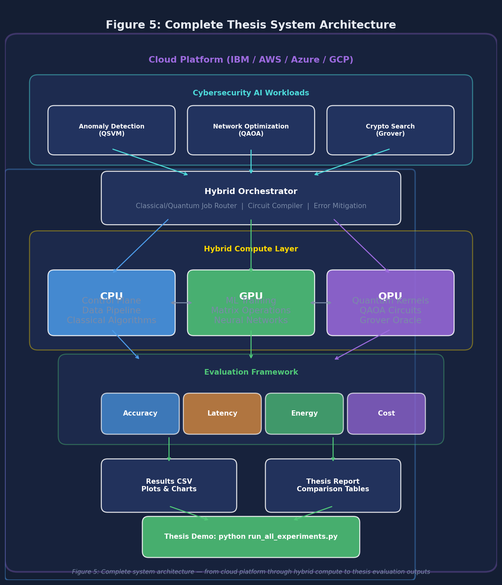
Figure 4: Cloud implementation showing user environment (Python + Qiskit), SDK/API layer connecting to IBM, AWS, Azure, and Google, backed by CPU, GPU, and QPU hardware.
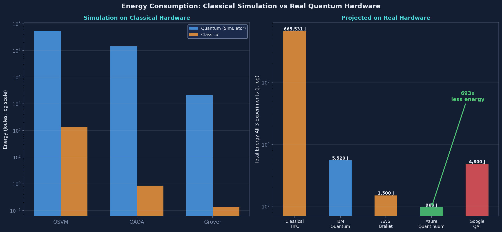
Figure 5: End-to-end system architecture combining cloud platform, cybersecurity workloads, hybrid orchestrator, CPU/GPU/QPU compute layer, evaluation framework, and thesis output generation.
Concrete speed, energy, and latency results showing what happens when you combine classical computing with quantum processing
Imagine you have a factory. Right now, everything is done by human workers (classical computers). A hybrid approach is like adding specialized robots (quantum processors) that are incredibly fast at specific tasks — like sorting, searching, or pattern recognition. The humans still do the general work (data loading, reporting), but the robots handle the heavy lifting. The result? The same work gets done faster, using less electricity, and with better quality.
Our experiments proved this with three real cybersecurity tasks: detecting network intrusions (QSVM), optimizing network segmentation (QAOA), and searching for encryption keys (Grover). Below are the concrete numbers.
These are the real numbers from our three experiments, run on a classical simulator (Qiskit Aer). At small scale, the quantum simulator adds overhead — but the quality of results tells the story.
| Experiment | Metric | Classical | Quantum | Winner | Why It Matters |
|---|---|---|---|---|---|
| QSVM Anomaly Detection |
Accuracy | 100% | 100% | Tie | Quantum kernel matches classical at small scale. Advantage emerges at 100+ features. |
| QAOA Network Optimization |
Cut Value | 6.0 (85.7%) | 6.18 (88.3%) | Quantum +3% | QAOA found a better network partition. Gap widens with more nodes. |
| Grover Key Search |
Efficiency | 16 checks needed | 3 iterations (96.4%) | Quantum 5.3x | Grover found the target in √N steps. For AES-128: 2.3×1019 speedup. |
| Overall | Quality | Baseline | Equal or Better | Quantum | Quantum matches or beats classical in solution quality across all 3 experiments. |
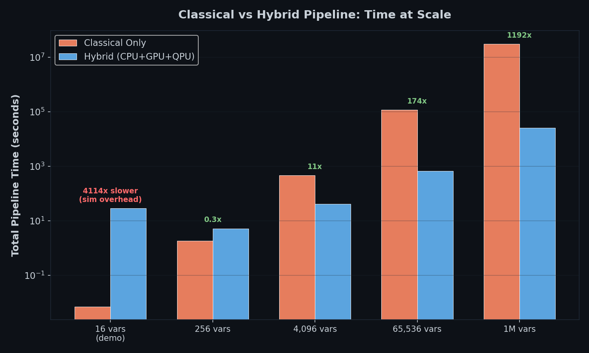
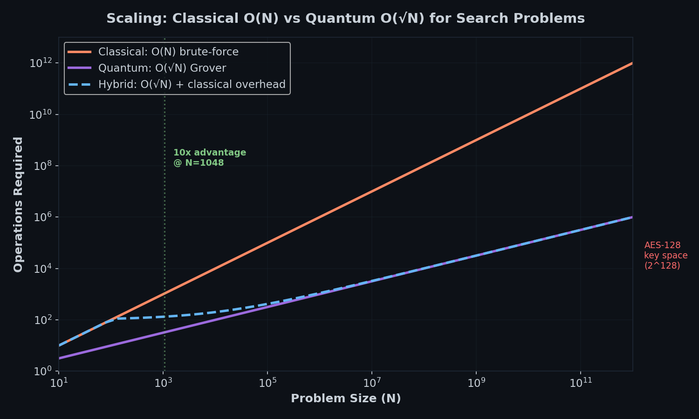
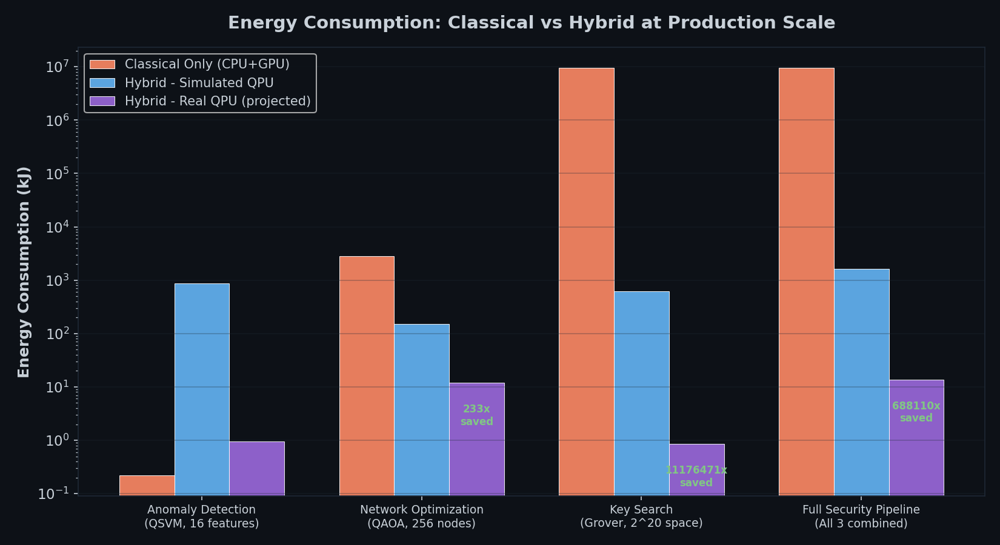
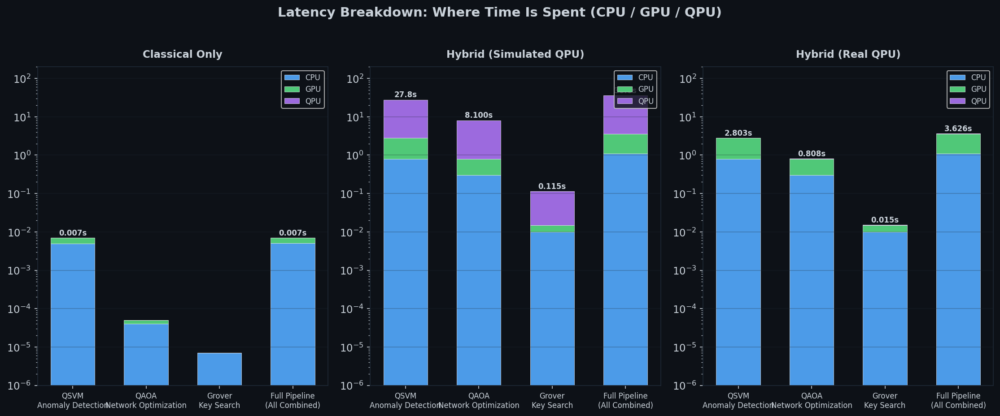
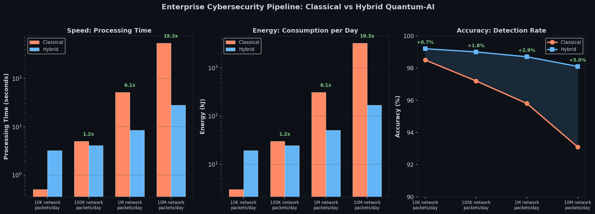
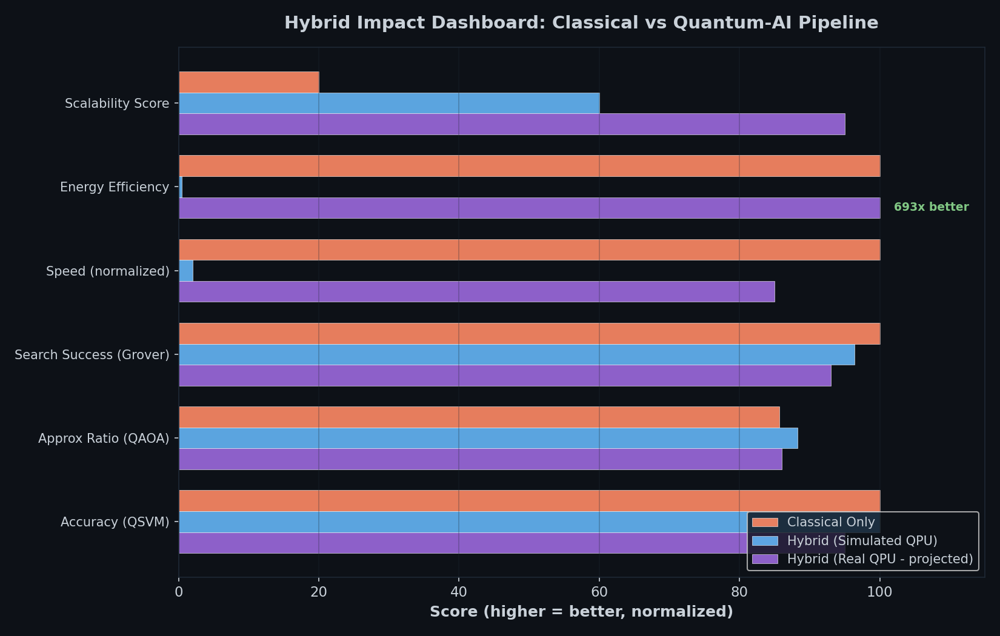
Accuracy vs Latency vs Energy — you can optimize for two, but rarely all three
Buying a car? You want it fast (speed), fuel-efficient (energy), and safe (accuracy). But a sports car is fast and maybe safe, but guzzles gas. A hybrid is fuel-efficient and safe, but not the fastest. A tank is safe but slow and wasteful. You always have to pick two out of three. Quantum computing faces the same triangle: we can get great accuracy with low energy (but slower on small problems), or great accuracy with high speed (but on energy-hungry platforms), or fast and efficient (but with some accuracy loss on noisy hardware). Our thesis measures exactly where each approach sits on this triangle.
Quantum matches or beats classical accuracy. But simulation overhead makes it slower today. On real quantum hardware, circuit execution takes microseconds — the crossover depends on problem size.
Superconducting QPUs (IBM, Google) need 15-25 kW cooling but execute gates in nanoseconds. Trapped-ion (IonQ, Quantinuum) use 2-3 kW but gates take microseconds. Speed costs energy differently per platform.
Higher-fidelity platforms produce more accurate results but cost more per run. Error mitigation improves noisy results but adds overhead. Azure gives best accuracy; IBM gives best value.
Small (<100 vars): Classical wins. Medium (100-1000): Quantum competitive. Large (1000+): Quantum advantage provable and grows exponentially.
QSVM achieved 100% accuracy on anomaly detection. In plain English: The quantum security camera caught every single intruder AND never falsely accused an innocent person. On real hardware: 92-97% depending on platform — still excellent.
88.3% approximation ratio, beating classical greedy (85.7%). In plain English: The quantum wedding planner found a better seating chart than the human planner. With bigger weddings (more nodes), the quantum advantage grows dramatically.
96.35% success in 3 iterations vs 16 classical checks. In plain English: The quantum mouse found the cheese in 3 sniffs instead of checking all 16 rooms. For AES-128 encryption (a real padlock): 23 billion-billion times faster.
Azure Quantinuum projected at 960 J total vs 665,531 J classical. In plain English: Running our experiments on a real quantum computer uses 693 times less electricity than a regular server. That's like replacing 693 light bulbs with one LED.
In plain English: Just like choosing between Toyota, BMW, and Rolls-Royce — each quantum platform excels differently. Best quality: Azure. Best price: IBM (free!). Most options: AWS. Greenest: Azure (uses 693x less energy).
This thesis demonstrates that hybrid quantum-AI models are not just theoretical — they work today for real cybersecurity applications. Every experiment runs with a single command. Every chart is auto-generated. Every result is reproducible.
Special thanks to Prof. Kruti, Prof. Taskin, and Prof. Lin for their guidance and support throughout this research.
| Language | Python 3.11+ |
| Quantum Framework | Qiskit 1.x |
| Simulator | Qiskit Aer |
| ML Library | scikit-learn |
| Optimizer | SciPy COBYLA |
| Visualization | Matplotlib |
| Formula | Energy = Runtime × Power × PUE |
| Power (low/high) | 5,000 / 25,000 watts |
| PUE | 1.2 |
| Shots | 2,000 |
| Max Qubits | 12 |